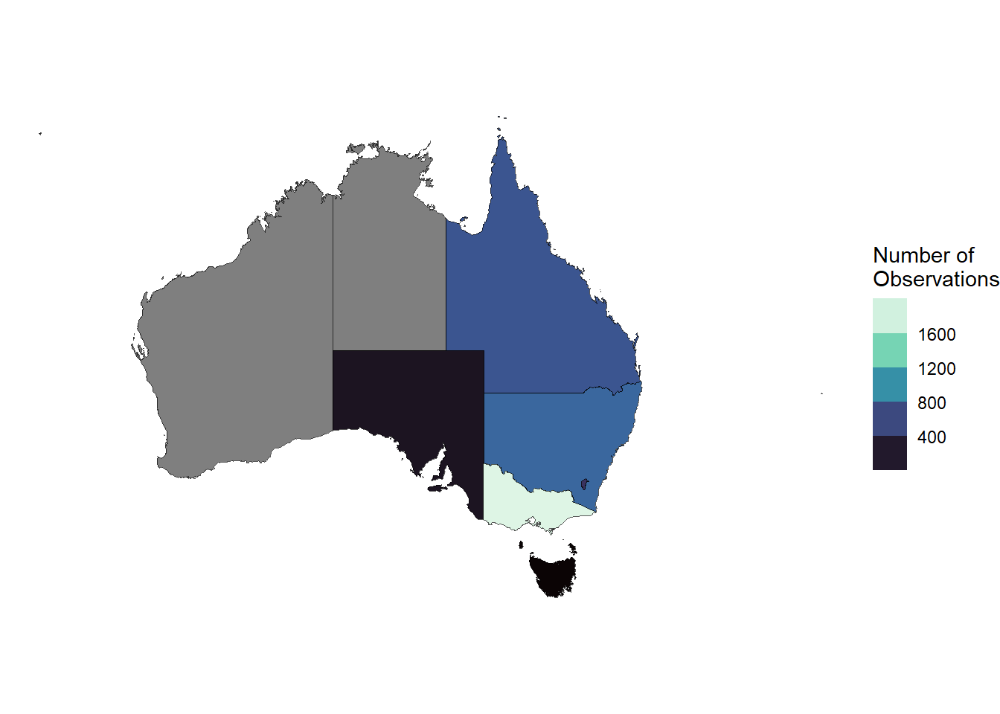

# packages
library(galah)
library(dplyr)
library(here)
library(ggplot2)
galah_config(email = "your-email-here") # ALA-registered email
starlings <- galah_call() |>
filter(doi == "https://doi.org /10.26197/ala.98d038d3-2058-4294-b683-fcb51a11f018") |>
atlas_occurrences()
starlings_taxonomy <- galah_call() |>
identify("Sturnidae") |>
atlas_species()Appendix D — Joins
If you work with biodiversity data, it is likely that you will need to join two separate datasets at some point to analyse how spatial, temporal, or environmental factors influence species. This chapter provides a brief overview of several common types of joins in dplyr to help you get started.
For a comprehensive introduction to joins, check out the Joins chapter in R for Data Science.
D.0.1 Prerequisites
In this chapter, we will use starling occurrence data from September 2015 in the ALA.

D.1 Keys
Joining dataframes relies on setting a key—one or more columns that exist in a primary table that correspond to one or more columns in a secondary table. Two datasets that we intend to join are matched according to the designated key.
As a simple example, let’s say we want to add complete taxonomic information to our starlings dataframe, which contains occurrence records with some, but not all, levels of taxonomic information. starlings_taxonomy contains complete taxonomic information for Sturnidae.
starlings# A tibble: 3,944 × 8
genus species scientificName cl22 year month decimalLatitude
<chr> <chr> <chr> <chr> <dbl> <dbl> <dbl>
1 Acridotheres Acridotheres t… Acridotheres … Quee… 2015 9 -16.9
2 Acridotheres Acridotheres t… Acridotheres … Quee… 2015 9 -16.9
3 Acridotheres Acridotheres t… Acridotheres … New … 2015 9 -33.8
4 Acridotheres Acridotheres t… Acridotheres … Vict… 2015 9 -37.7
5 Acridotheres Acridotheres t… Acridotheres … Aust… 2015 9 -35.2
6 Acridotheres Acridotheres t… Acridotheres … Quee… 2015 9 -27.2
7 Acridotheres Acridotheres t… Acridotheres … Vict… 2015 9 -38.0
8 Acridotheres Acridotheres t… Acridotheres … Quee… 2015 9 -16.9
9 Acridotheres Acridotheres t… Acridotheres … New … 2015 9 -33.9
10 Acridotheres Acridotheres t… Acridotheres … Aust… 2015 9 -35.3
# ℹ 3,934 more rows
# ℹ 1 more variable: decimalLongitude <dbl>starlings_taxonomy# A tibble: 5 × 11
taxon_concept_id species_name scientific_name_auth…¹ taxon_rank kingdom phylum
<chr> <chr> <chr> <chr> <chr> <chr>
1 https://biodive… Sturnus (St… Linnaeus, 1758 species Animal… Chord…
2 https://biodive… Acridothere… (Linnaeus, 1766) species Animal… Chord…
3 https://biodive… Aplonis (La… (Temminck, 1824) species Animal… Chord…
4 https://biodive… Aplonis (Ap… (G.R. Gray, 1861) species Animal… Chord…
5 https://biodive… Aplonis (Ap… Gould, 1836 species Animal… Chord…
# ℹ abbreviated name: ¹scientific_name_authorship
# ℹ 5 more variables: class <chr>, order <chr>, family <chr>, genus <chr>,
# vernacular_name <chr>Let’s join our starlings dataframe with starlings_taxonomy. The column genus in starlings appears to contain the same information in column genus in starlings_taxonomy.
starlings |>
select(genus) |>
distinct()# A tibble: 3 × 1
genus
<chr>
1 Acridotheres
2 Aplonis
3 Sturnus starlings_taxonomy |>
select(genus) # A tibble: 5 × 1
genus
<chr>
1 Sturnus
2 Acridotheres
3 Aplonis
4 Aplonis
5 Aplonis We can use this genus column as a key to add the extra levels of taxonomic information to the table containing starling occurrence records1.
starlings |>
left_join(starlings_taxonomy,
join_by(genus)) |>
rmarkdown::paged_table() # paged outputWarning in left_join(starlings, starlings_taxonomy, join_by(genus)): Detected an unexpected many-to-many relationship between `x` and `y`.
ℹ Row 1805 of `x` matches multiple rows in `y`.
ℹ Row 2 of `y` matches multiple rows in `x`.
ℹ If a many-to-many relationship is expected, set `relationship =
"many-to-many"` to silence this warning.Note that we received some warnings indicating that some rows had multiple matches. Make sure to read these warning messages carefully if you ever receive them because they might tell you that something unexpected happened during your join! In our case, the warnings are the result of several genera in starlings_taxonomy having the same genus name, which is something we already knew about and doesn’t worry us.
D.2 Basic types of joins
There are many types of joins that can help you in all kinds of situations! Join types generally fall within two categories:
- Mutating joins combine variables from two tables (e.g.,
left_join(),right_join(),full_join()) - Filtering joins combine variables, and additionally keep or remove rows that do not match the key column (e.g.,
semi_join(),anti_join())
Below are a few common examples of join types. Examples and animations are taken from Garrick Aden-Buie’s tidyexplain animations.
x <- tibble(id = c(1, 2, 3),
x = c("x1", "x2", "x3"))
y <- tibble(id = c(1, 2, 4),
y = c("y1", "y2", "y4"))
left_join(x, y, join_by(id))# A tibble: 3 × 3
id x y
<dbl> <chr> <chr>
1 1 x1 y1
2 2 x2 y2
3 3 x3 <NA> 
right_join(x, y, join_by(id))# A tibble: 3 × 3
id x y
<dbl> <chr> <chr>
1 1 x1 y1
2 2 x2 y2
3 4 <NA> y4 
full_join(x, y, join_by(id))# A tibble: 4 × 3
id x y
<dbl> <chr> <chr>
1 1 x1 y1
2 2 x2 y2
3 3 x3 <NA>
4 4 <NA> y4 
semi_join(x, y, join_by(id))# A tibble: 2 × 2
id x
<dbl> <chr>
1 1 x1
2 2 x2 
anti_join(x, y, join_by(id))# A tibble: 1 × 2
id x
<dbl> <chr>
1 3 x3 D.3 Spatial joins
Summarising where species or taxonomic groups occur by grouping them by spatial regions (e.g. state, council area, bioregion) can be useful. To do this, records or summary statistics need to be linked to their corresponding regions. This typically requires joining a spatial object with a dataframe, or joining two spatial objects.
As a simple example, let’s download a shapefile of Australian states and territories using the ozmaps package. The aus object contains the name of each state/territory (NAME) and its shape (geometry)2.
library(sf)
library(ozmaps)
aus <- ozmap_states |>
st_transform(4326)
aus- 1
- This line transforms the CRS projection of our map to match the CRS projection of ALA data.
Simple feature collection with 9 features and 1 field
Geometry type: MULTIPOLYGON
Dimension: XY
Bounding box: xmin: 105.5507 ymin: -43.63203 xmax: 167.9969 ymax: -9.229287
Geodetic CRS: WGS 84
# A tibble: 9 × 2
NAME geometry
* <chr> <MULTIPOLYGON [°]>
1 New South Wales (((150.7016 -35.12286, 150.6611 -35.11782, 150.6…
2 Victoria (((146.6196 -38.70196, 146.6721 -38.70259, 146.6…
3 Queensland (((148.8473 -20.3457, 148.8722 -20.37575, 148.85…
4 South Australia (((137.3481 -34.48242, 137.3749 -34.46885, 137.3…
5 Western Australia (((126.3868 -14.01168, 126.3625 -13.98264, 126.3…
6 Tasmania (((147.8397 -40.29844, 147.8902 -40.30258, 147.8…
7 Northern Territory (((136.3669 -13.84237, 136.3339 -13.83922, 136.3…
8 Australian Capital Territory (((149.2317 -35.222, 149.2346 -35.24047, 149.271…
9 Other Territories (((167.9333 -29.05421, 167.9188 -29.0344, 167.93…Our starlings data also contains the state/territory of each occurrence in column cl22. We can group by state/territory and summarise the number of occurrences to get an overall count by state/territory.
counts_by_state <- starlings |>
group_by(cl22) |>
count()
counts_by_state# A tibble: 7 × 2
# Groups: cl22 [7]
cl22 n
<chr> <int>
1 Australian Capital Territory 482
2 New South Wales 779
3 Queensland 669
4 South Australia 196
5 Tasmania 91
6 Victoria 1664
7 <NA> 63To prepare our data for mapping, we can join counts_by_state to aus using the state/territory name as our key.
aus_counts <- aus |>
left_join(counts_by_state,
join_by(NAME == cl22))
aus_countsSimple feature collection with 9 features and 2 fields
Geometry type: MULTIPOLYGON
Dimension: XY
Bounding box: xmin: 105.5507 ymin: -43.63203 xmax: 167.9969 ymax: -9.229287
Geodetic CRS: WGS 84
# A tibble: 9 × 3
NAME geometry n
<chr> <MULTIPOLYGON [°]> <int>
1 New South Wales (((150.7016 -35.12286, 150.6611 -35.11782,… 779
2 Victoria (((146.6196 -38.70196, 146.6721 -38.70259,… 1664
3 Queensland (((148.8473 -20.3457, 148.8722 -20.37575, … 669
4 South Australia (((137.3481 -34.48242, 137.3749 -34.46885,… 196
5 Western Australia (((126.3868 -14.01168, 126.3625 -13.98264,… NA
6 Tasmania (((147.8397 -40.29844, 147.8902 -40.30258,… 91
7 Northern Territory (((136.3669 -13.84237, 136.3339 -13.83922,… NA
8 Australian Capital Territory (((149.2317 -35.222, 149.2346 -35.24047, 1… 482
9 Other Territories (((167.9333 -29.05421, 167.9188 -29.0344, … NANow we can use these data to create a choropleth map3.
ggplot() +
geom_sf(data = aus_counts,
aes(fill = n)) +
guides(fill = guide_coloursteps(title = "Number of\nObservations")) +
scale_fill_viridis_c(option = "G") +
theme_void()
The sf package also has specialised functions for spatial joins like st_join(), which can be especially useful for joins using points (e.g., POINT) and shapes (e.g., POLYGON, MULTIPOLYGON). Below is a small example where we use the point location to join with the state/territory. Note that we lose the POINT location in favour of the state MULTIPOLYGON shape, held in the column geometry.
# convert record coordinates to sf POINT class
starlings_sf <- starlings |>
tidyr::drop_na() |>
st_as_sf(coords = c("decimalLongitude", "decimalLatitude"),
crs = 4326)
# join points to aus states that intersect spatially
states_with_species <- st_join(x = aus,
y = starlings_sf,
join = st_intersects,
left = FALSE)
states_with_species |>
rmarkdown::paged_table() # paged outputUsing
genusis also a better choice thanspeciesorscientificNamein this instance because they appear to contain similar but not exactly the same information tostarlings_taxonomy$species_name. Using these columns as a key for our join would result in missing information after joining due to mismatches.↩︎This shapefile contains state/territory outlines as vectors. See this section on vectors to learn more about what a vector is.↩︎
For more advanced examples of making choropleth maps, check out the ALA Labs articles counting points in shapefiles and using multiple colour scales.↩︎